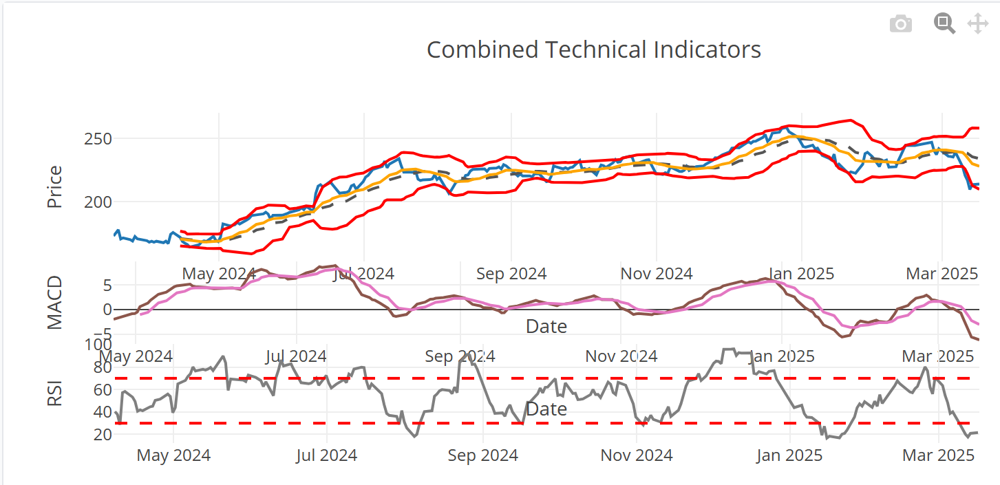
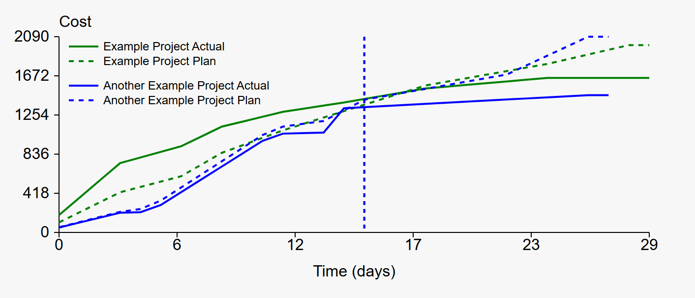
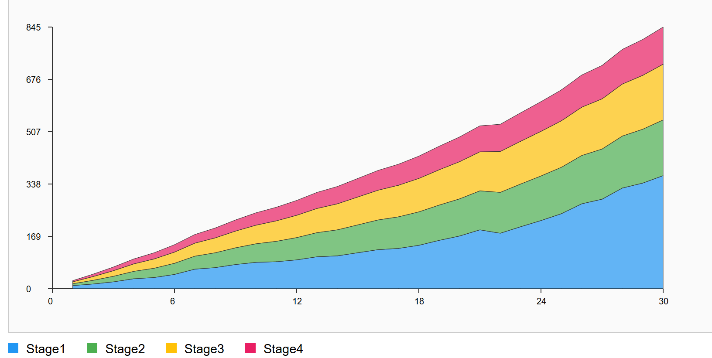

Stock Trend Forecast
Identify trends using Market Sentiment, Insider trading, Technical Analysis, Regression, and Monte Carlo Simulations.
Open Tool


Simple Regression & Distribution
Analyze data distribution and predict using simple linear and polynomial regression models.
Open Tool

Advanced Scheduling
Uses output from Advanced Network Diagram to simulate complex interdependencies using Monte Carlo.
Open Tool

Earned Value Management
Compare project performance and forecast using EVM calculations.
Open Tool



Queueing Theory and CFD
Improve efficiency & identify bottlenecks using Queueing Calculators.
Open Tool